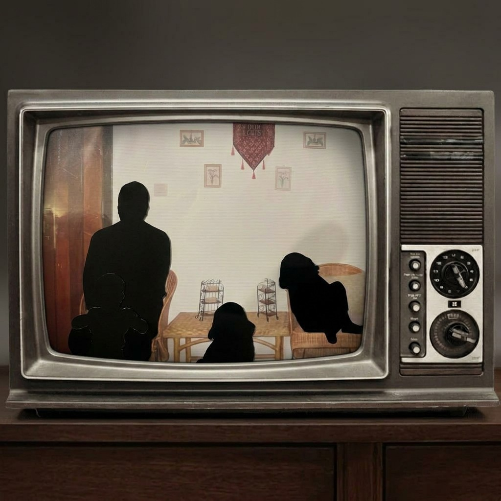
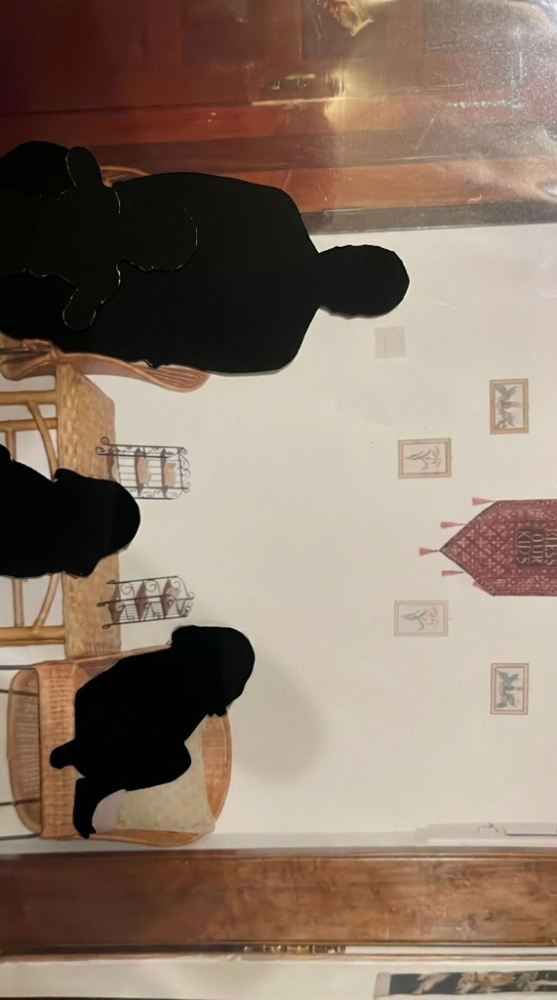
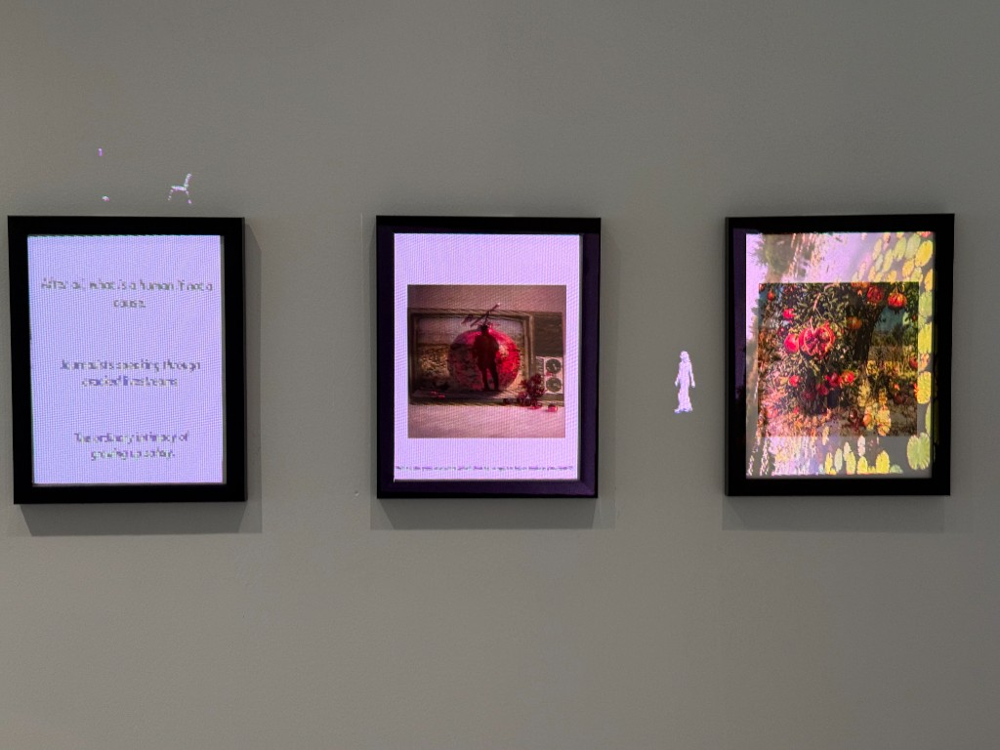
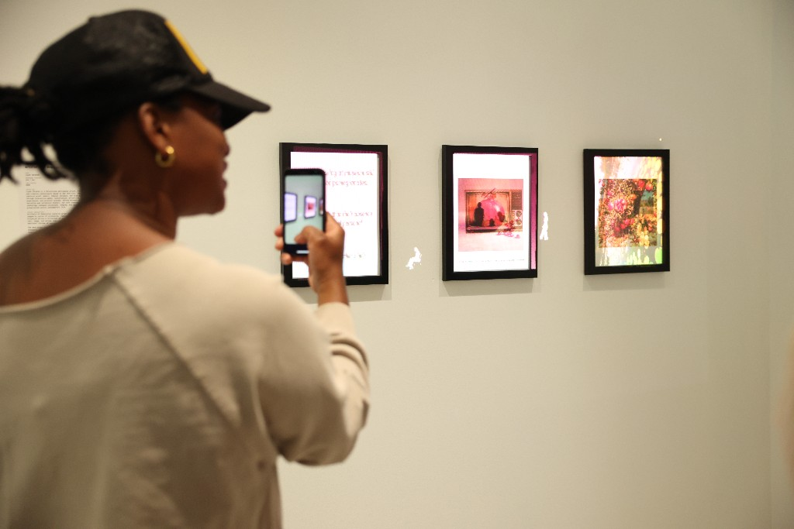

Installation · Projection Mapping · AI
Grief as a repetitive act shaped by cycles of witnessing, remembering, and return. Projected across a collection of pomegranates, fragments of text, image, and motion loop continuously, reflecting the emotional rhythms of searching for closeness through screens.
The work draws from experiences of inherited memory and distance, examining how intimacy, care, and grief can form through continuous observation rather than physical presence — through parasocial relationships with online figures and distant lives encountered digitally.
The pomegranate functions as both archive and body — a vessel associated with abundance, rupture, inheritance, and preservation. Through projection, the installation transforms ordinary objects into unstable memory surfaces, examining what happens when grief cannot be fully metabolized and instead settles into repetition as a form of survival.
All visuals were generated and composited entirely in Runway, using AI video generation to produce the looping sequences of pomegranates, text fragments, and layered motion. The footage was then projection mapped onto physical frames, collapsing the boundary between the digital and the material.



